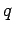
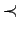
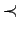
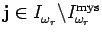
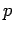
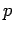
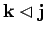
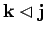

First, we have to state the -analogue of [O2, Lemma 8.1],
one of the principal ingredients in the
proof of the symplectic straightening algorithm in the classical
case.
In order to define the quantum analogue to the ideal  considered
there
we have to look in more detail at the elements and defined
in the previous section.
considered
there
we have to look in more detail at the elements and defined
in the previous section.
Relation (16) implies . Consequently we get from (14) and (15)
This stands in remarkable contrast to the classical and even
quantum linear case where such expressions vanish. On the other hand by
(13) and the above explanations
the elements and commute with each other, exactly as in the
classical case. Consequently, the elements
are defined
independently of the order of the elements of the subset
.
Again, we write
for the collection of all subsets
of
whose cardinality is  . Set
. Set
and let
 be the ideal in
be the ideal in
 generated by the elements
.
We call an ordered subset
reverse symplectic if the multi-index obtained from
generated by the elements
.
We call an ordered subset
reverse symplectic if the multi-index obtained from  by ordering its elements according to  (obtained from
by ordering its elements according to  (obtained from
 by a suitable permutation
by a suitable permutation
 such that
) is
-reverse symplectic standard. Here is the
such that
) is
-reverse symplectic standard. Here is the  -th
fundamental weight.
-th
fundamental weight.
We postpone the very technical proofs of
both propositions to separate sections below.
Let us prove Proposition 8.3 in
the case
, first. Take
. Using the weak part of the
straightening algorithm 10.1, we may
assume
.
This means
 . In order to apply
our lemmas
we have to change orders from to . Let
. In order to apply
our lemmas
we have to change orders from to . Let
 be such that
, that is,
is a multi-index corresponding to a non reverse
symplectic ordered set
be such that
, that is,
is a multi-index corresponding to a non reverse
symplectic ordered set
 in the sense of Proposition
in the sense of Proposition  . Application of this proposition to yields
. Application of this proposition to yields
since
 .
According to Proposition 12.2, the element
must be zero. Applying (11.6),
we obtain the following equation holding in
:
.
According to Proposition 12.2, the element
must be zero. Applying (11.6),
we obtain the following equation holding in
:
Since
is a basis of
 , each
individual summand in the summation over
, each
individual summand in the summation over
 must be zero.
Together with Corollary 9.12,
this gives the desired result in the case of multi-indices
must be zero.
Together with Corollary 9.12,
this gives the desired result in the case of multi-indices  corresponding to ordered subsets
, that is
corresponding to ordered subsets
, that is
 . The case for general
. The case for general  can be
deduced from this using
can be
deduced from this using
which follows from the formula
of Lemma 11.7
together with (19).
Next we consider the general case of  . Here, we can proceed
exactly as in the classical case.
Again, we may assume
by the weak part of the
straightening algorithm. Let
be the dual partition (
). We split
. Here, we can proceed
exactly as in the classical case.
Again, we may assume
by the weak part of the
straightening algorithm. Let
be the dual partition (
). We split  into  multi-indices
, where for
each
the entries of are taken from the
into  multi-indices
, where for
each
the entries of are taken from the  -th
column of
. The same thing can be done with
-th
column of
. The same thing can be done with
 . Since
. Since  is not
is not  -reverse
symplectic standard but standard
there must be a column
-reverse
symplectic standard but standard
there must be a column  such that is not
-reverse symplectic standard. Applying the result to the
known case of
, we obtain
such that is not
-reverse symplectic standard. Applying the result to the
known case of
, we obtain
The element
 satisfies
,
satisfies
,
 is constructed from
is constructed from  by replacing the
entries of by that of and
is
the same as
for the corresponding .
The product formula for bideterminants applied above is valid by our choice
of basic
by replacing the
entries of by that of and
is
the same as
for the corresponding .
The product formula for bideterminants applied above is valid by our choice
of basic  -tableaux inserting the numbers
column by column top down (otherwise the non-commutativity of
-tableaux inserting the numbers
column by column top down (otherwise the non-commutativity of
 would cause some trouble). From (11) we see
 and the proof of 8.3
is completed.
would cause some trouble). From (11) we see
 and the proof of 8.3
is completed.